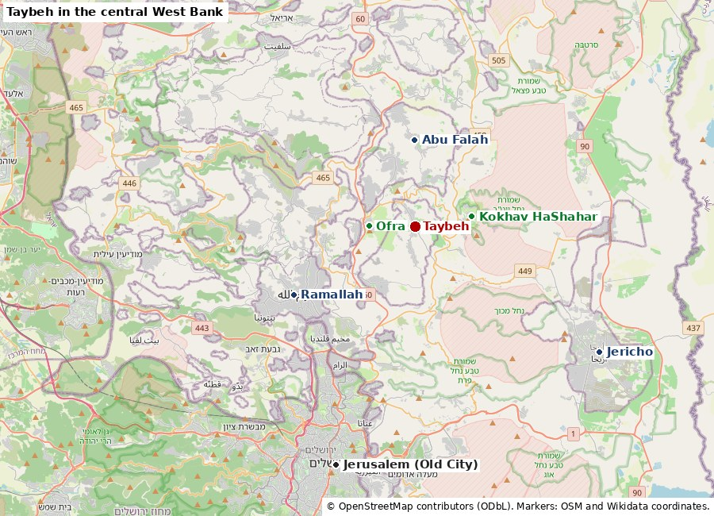
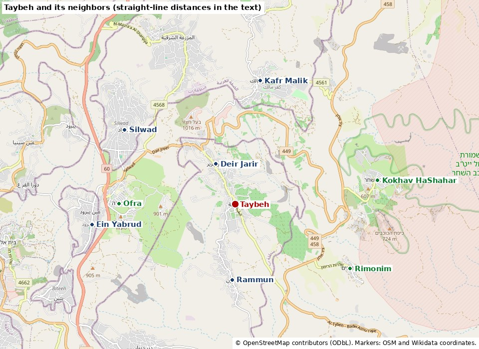
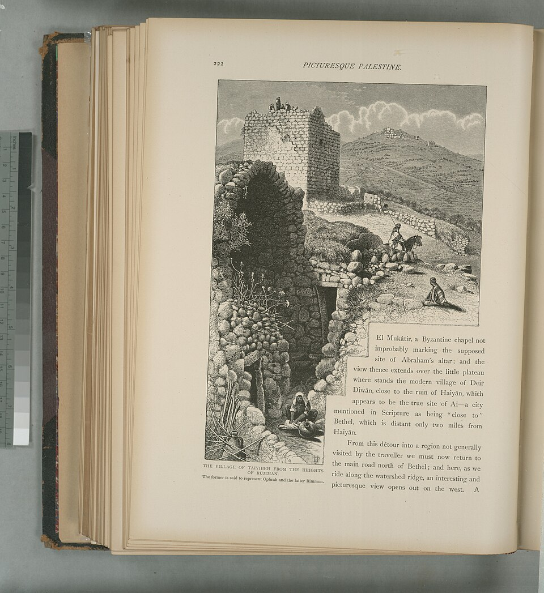
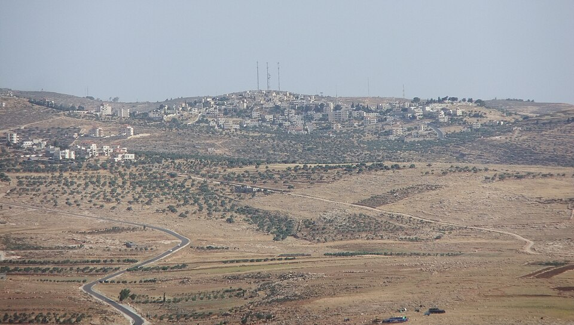
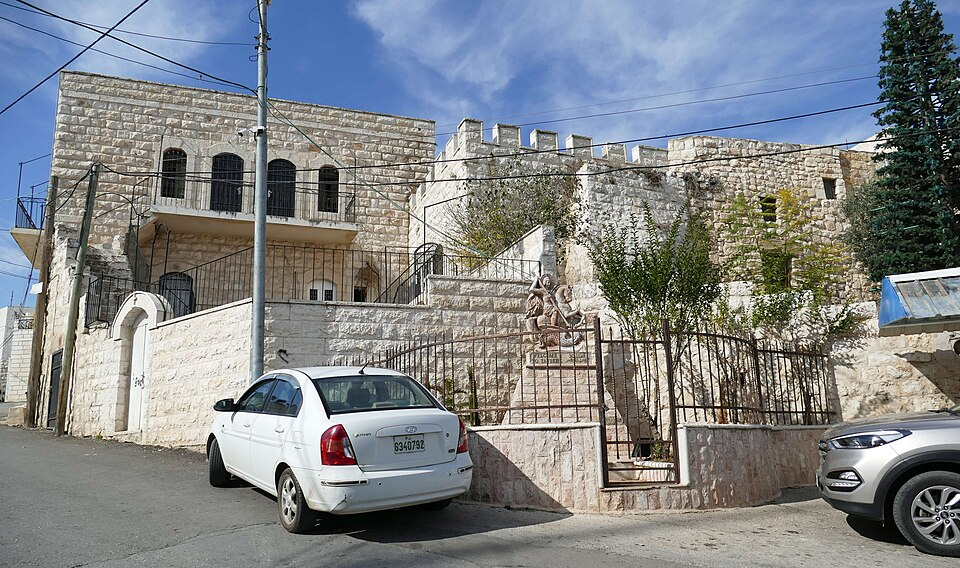
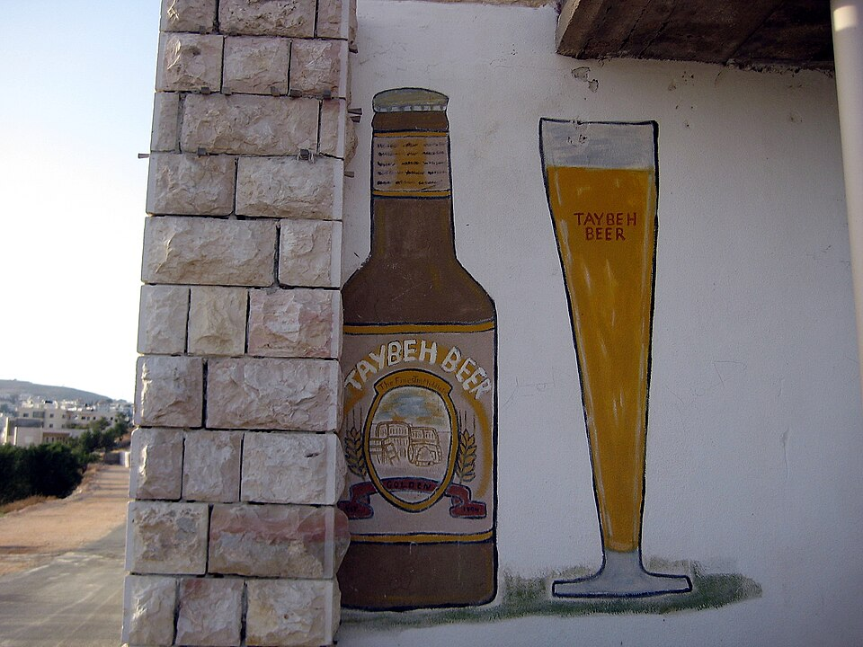
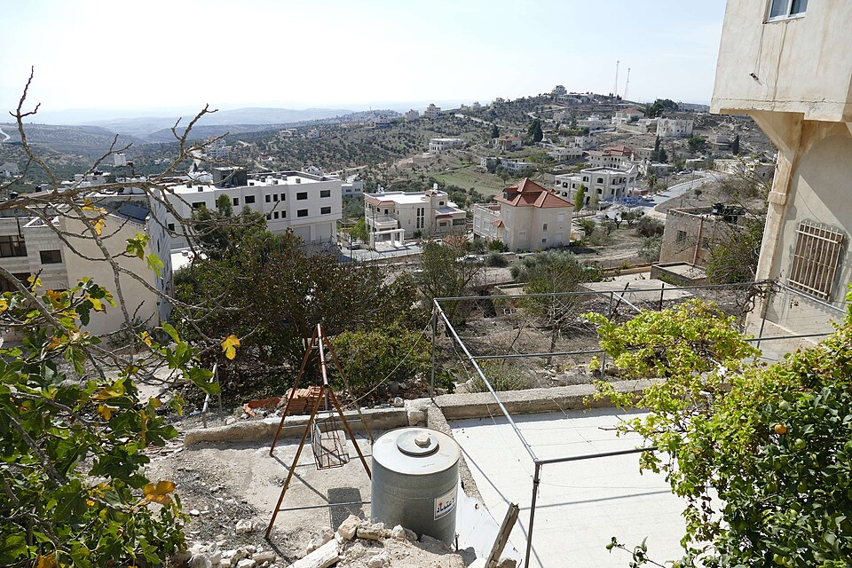

Coordinates. OpenStreetMap places the village at 31.9533 N, 35.3006 E (way 457389207) [1]. Wikidata and English Wikipedia give 31.95444 N, 35.30028 E [2]. The two points are about 130 m apart, so either can be used.
Elevation. The Latin Patriarchate gives 920 m; English Wikipedia gives 850 m in the text and 900 m in its summary box; the ruin of el-Khadr stands at about 840 m [2][3][4]. The village sits on a ridge where the central hill country falls off to the east toward the Jordan Valley; from it one can see the desert, Jericho and the Dead Sea [3].
Name. "Taybeh" means "the good" or "the goodly." A popular story says Saladin renamed the village after 1187 because he liked its people. The archaeologist Vincent Michel (University of Poitiers), who directed excavations there from 2000 to 2009, writes that the texts do not support this: the geographer Yaqut (about 1225) still called it 'Afra, and the first secure use of the name Taybeh is in an Ottoman tax register of 1549. In his reading, residents replaced the name 'Afra, whose Arabic root sounded ill-omened (related to 'ifrit, a demon), with et-Taiyibet el-Ism, "the one with the good name" [4]. The Israeli archaeologist Hanan Eshel proposed the same explanation for several places once called Ophrah (cited in [2]).

Distances. Straight-line distances below were computed from the OSM center of Taybeh to the OSM center of each place, and checked against Wikidata coordinates for the same places (the second figure). Road distances are longer. Jerusalem's Old City is about 20.5 km south-southwest in a straight line; the Latin Patriarchate's "30 km from Jerusalem" is a road figure, and Wikipedia's "15 km northeast of Jerusalem" appears to measure from the city's northern edge [2][3].
| Place | Type | Direction | Distance (OSM) | Check (Wikidata) |
|---|---|---|---|---|
| Deir Jarir | Palestinian village | NNW | 1.5 km | 1.2 km |
| Rammun | Palestinian village | S | 2.5 km | 2.8 km |
| Ofra | Israeli community | W | 3.8 km | 3.8 km |
| Kafr Malik | Palestinian village | NNE | 4.1 km | 4.0 km |
| Rimonim | Israeli community | ESE | 4.3 km | 4.4 km |
| Silwad | Palestinian town | NW | 4.3 km | 5.2 km |
| Kokhav HaShahar | Israeli community | E | 4.7 km | 4.5 km |
| Ein Yabrud | Palestinian village | W | 4.7 km | 4.9 km |
| Abu Falah | Palestinian village | N | 7.1 km | 6.9 km |
| al-Mughayyir | Palestinian village | NNE | 8.6 km | 8.4 km |
| Turmus Ayya | Palestinian town | N | 9.3 km | 9.1 km |
| Ramallah (center) | Palestinian city | WSW | 11.4 km | 11.3 km |
The larger gap for Silwad reflects where each database puts the center of a large town, not a disagreement about where the town is.

Survey work shows the site has been inhabited without a break since the Middle Bronze Age (about 2300 to 1550 BCE), according to Michel [4]. Since the Survey of Western Palestine (1882), most scholars identify Taybeh with Ophrah of Benjamin (Joshua 18:23; 1 Samuel 13:17), and many also with Ephraim near Baal-Hazor, where Absalom kept his sheep (2 Samuel 13:23), and with Ephron or Aphairema of 1 Maccabees 11:34 [2][4]. The Gospel of John says that after the raising of Lazarus, Jesus "went thence unto a country near to the wilderness, into a city called Ephraim, and there continued with his disciples" (John 11:54). The sixth-century Madaba mosaic map in Jordan marks "Ephron, which is Ephraia, where the Lord came" [4]. In the Roman period the town, called Apharaema, was the seat of a toparchy (district); it was attached to Judea in 145 BCE, and Vespasian took it in 69 CE and placed a garrison there (Josephus, cited in [2]; [6]).
A separate tradition links Taybeh with Gideon's Ophrah. Michel points out that Gideon's Ophrah belonged to Manasseh, farther north, and that this tradition, like several others at the site, arose by mistake and no earlier than the Crusades [4].

At least two churches were built in the Byzantine period. One stood in the center of the village, where the Greek Orthodox church now stands; it was rebuilt in 1820 to 1830 and again in 1927 without excavation [4]. The other, el-Khadr (Kniseh Mar Jiris, the church of St. George), stands on a rise southeast of the village center. Michel's excavation found a three-aisled basilica that grew into a church complex of 28 by 25 m, with a baptistery and, by about 500 CE, a martyrium chapel with oil-flow reliquaries of a Syrian type [4]. The Hebrew University's database of churches in the Holy Land lists it as Apharaema/Ephraim, el-Khadr [6]. The complex is owned by the municipality, not by any one of the three churches, which Michel says is one reason it became the shared "neutral" holy place of the village [4].
In the 12th century the Crusaders rebuilt el-Khadr as a smaller single-nave chapel inside the ruined Byzantine complex and built a castle on the hilltop, the Castrum Sancti Helie (Castle of St. Elias) [4]. In February 1182 Joscelin III gave the castle to King Baldwin IV, and in 1185 Baldwin V granted it to William V of Montferrat (Pringle, cited in [2]). The castle fell to Saladin in 1187 after the Battle of Hattin [2][4]. Michel dates later repairs to after 1187 or the earthquake of 1202 [4].
The tax register of 1549 counts 315 Muslims and 115 Christians [4]. A register of 1596 lists 63 Muslim households and 23 Christian households under the name Tayyibat al-Ism (Hütteroth and Abdulfattah, cited in [2]). So the village was mixed in the 16th century and became wholly Christian later. In 1838 Edward Robinson called it a Greek Christian village; in 1863 Victor Guérin estimated 800 inhabitants, of whom 60 were Catholic and the rest Greek Orthodox (cited in [2]). The Latin parish was founded in 1860 at the residents' request, and the Latin Patriarchate opened a school there in 1869 [3]. The French hermit Charles de Foucauld, canonized in 2022, stayed there in 1888 and again in 1897 or 1898 for an eight-day retreat (the Patriarchate and Wikipedia give different years) [2][3]. The Survey of Western Palestine (1882) described "a large Christian village in a conspicuous position, with well-built stone houses," with a central tower on the hilltop, the ruined church of St. George nearby and "remains of a ruined castle" (quoted in [2]).
The 1922 census counted 961 people (954 Christians: 663 Orthodox, 249 Latin, 60 Melkite, 2 Anglican); 1931, 1,125 (1,038 Christians); 1945, 1,330 (1,180 Christians) on 20,231 dunams of land (cited in [2]). Jordan ruled from 1948 to 1967; its 1961 census found 1,677 people, 1,176 of them Christian (cited in [2]). Israel has controlled the area since June 1967. The Latin Patriarchate says emigration began after 1948 [3]; the Greek Orthodox community claims about 10,000 people have left since 1967 (single source, unconfirmed) [23].

Three communities share the village. The Greek Orthodox are the largest, according to their parish website. Their Church of St. George stands on the site of the central Byzantine church; it was rebuilt in the 1820s and again from 1927 (Michel and Wikipedia give 1927; the parish website gives 1929 to 1932) [4][2], and run the Orthodox Patriarchal School [23][2]. The Latin (Roman Catholic) parish, founded in 1860, runs a school from kindergarten through secondary (secondary since 1978), the Beit Afram home for the elderly, a medical center and the Charles de Foucauld pilgrim center, which opened in 1986 with funds from the French Lieutenancy of the Order of the Holy Sepulchre [3][2]. Its parish priest since 2021 is Fr. Bashar Fawadleh [3]. The Melkite (Greek Catholic) community has worshipped there since 1869 and has a church built in 1964 [23]; its priest, Fr. Jack Abed, spoke to Kan in August 2026 (see section 11) [17]. The 1922 census shows the same three groups in roughly the same proportions as today (cited in [2]).
The churches have been the main voice of the village to the outside world. Fr. Fawadleh organized the 2026 twinning with Aulnoye-Aymeries [9], and the Desk's earlier editions reported that he sits on the board of Kairos Palestine, a Palestinian Christian group that calls for boycotts of Israel (not re-checked for this page). After the July 2025 fire, the Greek Orthodox Patriarch Theophilos III and the Latin Patriarch Cardinal Pizzaballa visited with diplomats from about 20 countries; Theophilos said "radical Israelis from nearby settlements intentionally set fire" near the church (see section 9) [12].

| Year | Population | Source |
|---|---|---|
| 1549 | 315 Muslims, 115 Christians | Ottoman tax register, via Michel [4] |
| 1922 | 961 (954 Christians) | Mandate census, via [2] |
| 1945 | 1,330 (1,180 Christians) | Village Statistics, via [2] |
| 1961 | 1,677 (1,176 Christians) | Jordanian census, via [2] |
| 2010 | 2,300 (mayor's figure) | Haaretz, via [2] unconfirmed |
| 2017 | 1,340 | Palestinian census (PCBS), via [2] |
| 2024 | about 1,500 | Latin Patriarchate [3] |
| 2025–2026 | about 1,200 | LA Times (Nov. 2025) [5]; Vatican News (Oct. 2026) [24] |
The figures are not fully consistent. Local figures tend to count people who are registered in the village but live elsewhere, and the decline after 1961 may partly reflect the departure of the remaining Muslim families, which the sources do not explain. All sources agree on heavy emigration, mainly to the Americas. In 2010 the mayor spoke of 12,000 former residents and their descendants in the United States, Chile and Guatemala (cited in [2]). In 2008 residents told a U.S. newspaper they feared the village would empty because of a low birth rate (cited in [2]). In October 2026 the activist Ihab Hassan told Vatican News that about 200 of the remaining 1,200 people were thinking of leaving; that is his claim [24].
The reasons given for emigration differ. Church and Palestinian sources stress the occupation, loss of land and settler attacks [3][24]. Other causes appear in the same record: economic pressure, a low birth rate, the pull of large family networks abroad, and tension with Muslim neighbors, of which the 2005 attack from Deir Jarir (section 9) is the clearest case [2][25]. The Press Service of Israel notes that Christians fell from about 11% of the population of the Holy Land in 1922 to about 1% of the population under the Palestinian Authority today [12].
The village lives mainly from olives, work in Ramallah, money from relatives abroad and tourism. Its best-known business is the Taybeh Brewing Company. According to the company, Nadim Khoury learned to brew in Boston, and he and his brother David returned after the Oslo Accords; their father, Canaan Khoury, built the brewery next to his house in 1994 "without taking any loans" and with Yasser Arafat's blessing. The company says it brews under the German purity law, began brewing under franchise in Germany in 1997, and exports to Europe, Japan, the United States, Chile and Jordan [7]. It describes itself as the first microbrewery in the Middle East; Reuters calls it "widely considered the Middle East's oldest microbrewery" [16]. Before the Second Intifada the beer was sold in Israeli bars (cited in [2]). David Khoury was later mayor [2][7].
The company started the Taybeh Oktoberfest in 2005, and says it became one of the largest events in the Palestinian areas. It canceled the 2014 festival because of the war in Gaza [7]. Attendance figures come mostly from the organizers and are not independently checked (unconfirmed).

France has the closest foreign ties to the village. The French Consulate General in Jerusalem and the French Senate paid for Michel's excavation of el-Khadr (2000 to 2009), which French craftsmen of the Compagnons du Tour de France helped restore, and an Ottoman house in the village was restored in 2007 as a small museum with the Palestinian group Riwaq and the French group REMPART [4]. The Charles de Foucauld pilgrim center was funded by the French Lieutenancy of the Order of the Holy Sepulchre [2].
Aulnoye-Aymeries (2026). On July 7, 2026, the council of Aulnoye-Aymeries, a town of the Nord department in northern France, voted unanimously to twin with Taybeh. Mayor Bernard Baudoux announced that a delegation would go to Taybeh "in the autumn" to bring humanitarian aid, and that children from Taybeh would be hosted in France. He tied the step to the town's support for Ukraine, its decades-old twinning with Quedlinburg in Germany, and planned "solidarity with the Cuban people" [8]. The twinning was made official in Aulnoye-Aymeries on August 18, 2026, when eight Palestinians aged 14 to 17 were received with the association "l'Aulne et l'Olivier" and Fr. Bashar Fawadleh, whom Canal FM calls the "spearhead" of the twinning; L'Observateur counted nine young people [9][37]. The deputy mayor, Agnès Denys, said the town had worked "for peace in Palestine" for more than 30 years and that lasting peace needs two states [9]. The October 17 visit (section 12) was the return visit and the official signing on the Taybeh side.
Baudoux's record matters for how the visit should be read. The Desk reported on October 17 and 18 that he is a Communist mayor, that he raised the Palestinian flag over his town hall in September 2025 until the sub-prefecture had it removed, that he called for "strong sanctions" on Israel in 2018, and that he spoke in April 2025 at a pro-Palestinian event co-organized with a group (AFPS) that described the October 7 attack as "a military operation of the weak against the strong" (L'Observateur; L'Humanité; JSR) [38]. The visit was a political twinning ceremony, not a neutral consular inspection.
We found no other confirmed French town twinned with Taybeh. Some Palestinian lists name other partners; we did not verify them.
Under the 1995 Oslo II agreement, about 35% of the village's land is Area B and 65% is Area C, according to the Applied Research Institute–Jerusalem (ARIJ), a Palestinian research group (cited in [2]; [10]). Reuters says "parts of Taybeh are located in Area B" [16]. In Area B the Palestinian Authority runs civil affairs and Israel keeps security control. Israelis may not enter Areas A and B without coordinating with the army, which is the point the IDF made after the July 2026 gunfight at Tell [29] and again after the October 17 incident [18]. The Greek Orthodox parish website calls the village Area C; that conflicts with the other sources and seems to refer to the land around the village [23].
ARIJ says Israel took 393 dunams of Taybeh land for Rimonim and 22 dunams for Ofra (cited in [2]). We could not open the ARIJ profile itself, and we have no Israeli source on how this land was classified (for example, as state land). Much of the village's olive land lies to the east, toward Route 449, Rimonim and the new farm. Access to it is the main practical issue every harvest season [24][31].
| Place | Distance and direction from Taybeh | Notes |
|---|---|---|
| Ofra | 3.8 km W | Israeli community on Route 60, in the Binyamin Regional Council. |
| Rimonim | 4.3 km ESE | Israeli community off Route 449 near its junction with Route 458; ARIJ says part of its land was Taybeh's [2]. |
| Kokhav HaShahar | 4.7 km E | Israeli community on the eastern slopes toward the Jordan Valley; founded more than 20 years before 2002 by a group of families that included Esther Galia (see section 9) [21]. |
| Sela HaRimon farm ("Rimonim West") | north of the village (exact site unconfirmed) | Farm outpost founded in 2025, listed by Peace Now as a national-religious community farm [11]. Channel 14 places it "north of the town of Taybeh" [15]. Its grazing land was the site of the June 2026 fire. |
| Deir Jarir | 1.5 km NNW | Muslim village; scene of the 2005 attack on Taybeh [25]. |
| Kafr Malik | 4.1 km NNE | Muslim village; scene of the deadly clash of June 25, 2025 [28]. |
| Rammun | 2.5 km S | Muslim village; Middle East Eye says it is inside the 2026 closed zone [31]. |
Relations with the Israeli neighbors are not only hostile. In August 2026 the Melkite priest Fr. Jack Abed told Kan: "We are not against anyone. I have good friends who come to visit, and people still come into the village from Rimonim and from Kokhav HaShahar and shop in our grocery stores." He also said the village has good relations with the Muslim villages around it [17].
Relations with the Muslim neighbors are mostly described as good, with one serious break. In early September 2005, after a Muslim woman from Deir Jarir was found to have been pregnant and was buried in suspicious circumstances (many suspected an "honor" killing; her two brothers were arrested), two or three hundred armed men from Deir Jarir attacked Taybeh at night and burned 13 houses belonging to the extended Khoury family of a Christian man accused of a relationship with her. The brewery was spared. A Deir Jarir elder told the BBC that the man "must die" [25]. This episode is often left out of accounts that present the village's problems as coming only from Israel.

Route 449 and Route 458 near Rimonim junction remain the roads that residents of Rimonim, Kokhav HaShahar and the farms use daily. We did not compile later stone-throwing or shooting incidents on these roads; a fuller list would need IDF or Binyamin Council data.
The claim. In July 2025 the Taybeh municipality and the churches said settlers had deliberately set fire near the cemetery and the church of St. George (el-Khadr) on July 7, and the municipality released a video it said showed settlers starting the fire. On July 14 the Greek Orthodox Patriarch, Theophilos III, the Latin Patriarch, Cardinal Pizzaballa, and diplomats from about 20 countries visited. Theophilos said "radical Israelis from nearby settlements intentionally set fire near the town cemetery and the church of St. George," and the heads of churches said the attacks were "facilitated and enabled by state policies" [12].
The counter-evidence.
Status. The church was not damaged and the fire was not shown to have been set by Israelis. The police said the investigation into the fire's cause was continuing; we found no later finding and no arrest. The story was widely reported abroad in its first form, and much less widely corrected.
A fuller account of the ambassador's statements on settler violence is in the Desk's separate backgrounder, Ambassador Huckabee and "settler violence": statements and visits.
The July 2025 visit. U.S. Ambassador Mike Huckabee visited Taybeh on Saturday, July 19, 2025, after the July 7 to 11 fires near the St. George church and cemetery, and met Mayor Suleiman Khoury and the Greek Orthodox priest, Fr. Daoud Khoury [14]. Ynet called the visit unusual. He wrote that a "peaceful village, with many American citizens," had been hit by vandalism "including arson at an ancient church," and said that desecrating a church, mosque or synagogue is "a crime against humanity and against God." At the site he said: "To commit an act of sacrilege by desecrating a place that is supposed to be a place of worship, it is an act of terror, and it is a crime. There should be consequences, and it should be harsh consequences" [12][13][14]. He said those who commit terror and violence there or anywhere else must be found and prosecuted, "not just reprimanded" [13]. He did not name a culprit, but the visit came after the churches had blamed settlers, and it was reported worldwide as U.S. backing for that charge.
The correction. Two to three days later the police said the church had not been damaged and the reports were "factually incorrect" (section 9). Huckabee then wrote: "The investigation shows no damage to the ancient church in Taybeh, and the investigation into the source of the fire continues. I have NOT attributed the cause of fire to any person or group, since we don't know with certainty. The press has. I said that regardless of who is responsible, it is a crime that deserves punishment" [13][33]. TPS reported that neither the ambassador nor the Greek Orthodox Patriarchate answered its questions [12].
2026. After the August 2026 closure, the State Department told the Palestinian newspaper Al-Quds on August 13 that it was "monitoring" the situation in Taybeh [35]. On September 5, 2026, Huckabee visited Turmus Ayya, 9 km north, not Taybeh, and said "terror is terror, and there will be consequences" (Maariv) [34]. We found no Huckabee statement specific to the October 17 incident at Taybeh; he did condemn the beating of the Washington Post photographer at Abu Falah on October 16 as a "despicable act of terror," according to the Times of Israel [28 note: ToI site, see the Huckabee backgrounder].
The order. On August 9, 2026, the head of IDF Central Command, Maj. Gen. Avi Bluth, signed an order declaring Taybeh a closed military zone [16][17]. The army said that anyone who is not a resident of the village or of the area may not enter it, and stressed that this covers Israeli citizens and foreigners alike; journalists may enter as long as there is no danger to their lives and they do not "interfere with the activity of the forces" [17]. The order does not apply to Palestinian residents of the area [16][17]. An army spokesman told Reuters the step was "due to some violent attacks by Israelis in the region," and the army said that when it gets reports of violations, soldiers "operate to disperse the gatherings and detain suspects in order to protect the citizens of the area" [16]. Maariv reported criticism from the left that the army and police had failed to deal with far-right activists in the area [30]. Middle East Eye reports that the zone also includes Rammun [31]. OSV News and the parish priest, quoted by Palestinian and Turkish media, say the order runs until July 2027 [32]. We have not seen the text, number or map of the order, so its exact borders and end date are unconfirmed.
Prior conditions. The order came at the end of a summer of violence in the area and across the West Bank:
How it has worked. Each side says the order is not working, for opposite reasons. Fr. Jack Abed told Kan the order was not fully enforced, that groups of Jews had entered since it was imposed, and that "hilltop youth come into the village and bring their flocks to graze here and eat our olives, which is the only income we have left" [17]. Ihab Hassan, a Palestinian Christian activist, told Vatican News in October that in practice the restrictions "just apply to Palestinians, while the settlers continue to go wherever they want" [24]. That does not fit the order's text, which is aimed at non-resident Israelis. The Catholic bishop James Curry of England and Wales said the ban would cost the village tourism and pilgrim income and "international scrutiny" [24]. Middle East Eye's headline is that the order "fails to stop settler violence" [31]. From the army's side, the order gave soldiers the legal power to remove Israelis from the area, and the IDF's main point after October 17 was that the European delegation came with Israeli activists, who are themselves barred by the order, without telling the army (section 12). The order was still in force in October 2026 [24].
Background, October 16. The day before, masked Israelis came down from a hilltop outpost and attacked olive harvesters, activists and journalists at Khirbet Abu Falah, 7 km north; a Washington Post photographer, Heidi Levine, was beaten. The Desk's separate page covers that incident: Abu Falah, October 16.
The Israeli account first. On Saturday afternoon, October 17, a European delegation came to Taybeh's olive harvest. The IDF said the visit was not coordinated with the army, that the warning was sent to a brigade operations account meant only for security personnel, and that according to its preliminary inquiry no troops were there at the time [18]. Foreign Minister Gideon Sa'ar condemned the "Israeli rioters" but said it was "unfortunate" the visit was not coordinated, since coordination "could have helped safeguard the visitors' security" [18]. After the Sabbath, the Prime Minister's Office issued a statement headed "Serious accusations require serious evidence." It said the delegation had entered "a sensitive area with a history of confrontations without prior coordination with the IDF," that it included Bernard Baudoux, "a French Communist Party mayor" who had raised the Palestinian flag over his town hall, that the images "do not establish the complete sequence of events or individual responsibility," and that the reports came amid "a coordinated campaign to smear Israel" during the harvest [20]. The PMO gave no evidence for the campaign claim, and its doubt about who attacked goes further than the army and Sa'ar, who both blamed Israelis. Yesha Council chairman Israel Ganz said "provocateurs and terrorists" use the harvest to create clashes, but also that "Israelis who resort to violence play into their hands" (JSR) [38].
Police and army follow-up. Israel Police sources told Ynet on October 18 that the diplomatic missions had not cooperated: as of Saturday evening, October 17, the missions had not given testimony, footage, access to the vehicles or permission for forensic tests [36][42]. Haaretz, citing the army's inquiry, reported that warnings of settler threats reached the Binyamin Brigade operations room by 1 p.m. and that activists sent more at 1:30 p.m., but the room did not recognize the number and ignored them; forces heard of the attack only around 3 p.m., when it was over. The army set up a team to examine its handling [40]. No arrests had been reported as of Sunday afternoon, October 18.
The delegation's account. The group included Belgian Consul General Anick Van Calster and a second Belgian diplomat, French and Polish diplomats, the French consul general and his wife, the archbishop of Cambrai, the parish priest of Aulnoye-Aymeries, and Baudoux, 78 [19][37]. Two Israeli activists also came; one, Amit Orfali, told Haaretz [40] he came after Palestinians reported settlers taking sacks of olives. Belgium's foreign ministry spokesman said masked settlers armed with sticks attacked and that "a window of the consul general's vehicle was broken"; the Belgians were unhurt [37][41]. Minister Prévot said only that "a Belgian vehicle was damaged." Who the car belonged to is unclear: the Guardian says Baudoux was by "a vehicle with diplomatic plates," and its photo caption calls the damaged car "mayor Badoux's car" [19]. No Belgian official called the car armored; only the Guardian's and HLN's own text say so [19][41]. The Guardian's photo shows a silver SUV with its rear left quarter window cracked around a hole about the size of a fist. A hole through the glass suggests that this window was not ballistic glass, or that it took many blows (our inference, unconfirmed). The weapons reported are sticks, clubs, stones and crowbars; no firearms or explosives were reported [19][42]. Corrected October 18: an earlier version said, wrongly, that the Guardian reported Baudoux was trying to get into an armored Belgian car. Baudoux told AFP he was kicked and hit with iron bars. An unnamed diplomat told Ynet that seven men aged 20 and over attacked with clubs and iron bars, that they "probably" came from far away and were "called in especially," and that the delegation is "convinced" it was organized against Europeans; he offered no evidence for those points, and the assault itself was not filmed. What was filmed is Baudoux on the ground afterward and the Belgian car with a broken window [18]. A diplomat told Ynet that the mayor's "past politics" are "not relevant to the question of who attacked him" [18].
The coordination dispute. The delegation says coordination was not needed because Taybeh is in Area B, and a Western diplomatic source told the Guardian that demanding advance notice violates diplomatic convention [19]. The IDF did not say a permit was needed. Its point is that without coordination no soldiers were there to protect the group, and that the Israeli activists who came with the delegation were themselves barred by the closure order [18]. Both points can be true at once.
Assessment. The assault by masked Israelis on foreign diplomats is established by the photographs, the IDF and the foreign minister, and nothing in the background excuses it. The details of who attacked, how many, and whether it was organized rest so far on the delegation's own word. The visit was not a neutral fact-finding trip: it was the signing of a twinning arranged by a pro-Palestinian French mayor and the Latin parish priest, joined by Israeli activists, in a zone closed to Israelis, without notice to the army.
Taybeh is a real and old Christian community, and its decline is real. But the way it is presented abroad, as a village whose Christians are being driven out by settlers, leaves out much of the record. Emigration began long before the current settlements and has many causes, including economic pressure and, in 2005, violence from a Muslim neighbor. The best-known recent accusation, the 2025 church fire, was not supported by the evidence; the church was not damaged, and video showed Israelis putting the fire out. Israel's army responded to attacks by Israelis on the area by closing it to Israelis, an unusual step that is directed at Israeli extremists, not at the village. At the same time, the record also includes real attacks by Israelis in 2025 and 2026, of which Kafr Malik and October 17 are the clearest, and Israeli officials themselves have condemned them. The area has also seen deadly Palestinian attacks on Israeli drivers on Route 458. Readers should treat claims from both sides, including the churches, the municipality, the Binyamin Council and the Prime Minister's Office, as claims until there is footage, a police finding or an independent witness.
Maps: rendered for this report from OpenStreetMap tiles and data (© OpenStreetMap contributors, ODbL). Photos: Wikimedia Commons, with the author and license given under each image.
.jpg){kind=link}